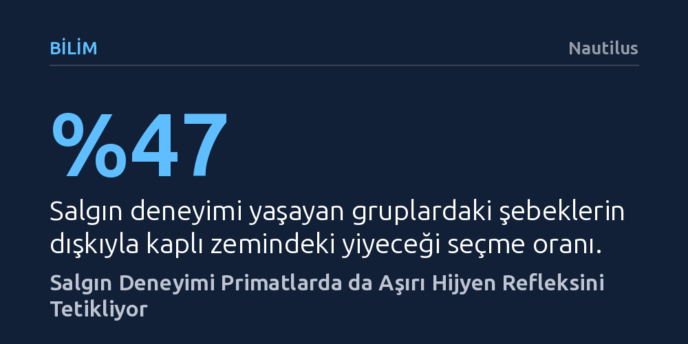

BILIM · Nautilus · 2026-10-21
Bir virüs salgını atlatan şebekler, patojenin gerçek bulaşma yolunu bilmeseler bile kirlenmiş gıdalardan kaçınarak genel hijyen tedbirlerini artırıyor. Bu bulgu, primatlarda tiksinme hissinin ve aşırı tedbirliliğin doğrudan salgın deneyimiyle pekiştiğini ortaya koyuyor.
İnsanların salgın dönemlerinde sergilediği aşırı hijyen reflekslerinin ve tiksinme duygusunun, primat atalarımızdan devralınan evrimsel bir korunma mekanizması olduğunu gösteriyor.

COVID-19 pandemisinin ilk aylarında marketten gelen paketleri dezenfektanla silen, kargoları günlerce havalandıran ve sebzeleri sabunla yıkayan insan manzaraları hafızalardaki tazeliğini koruyor. Virüsün havadan mı yoksa temas yoluyla mı yayıldığını henüz tam kavrayamadığımız o dönemde gösterdiğimiz aşırı tedbirlilik hali, yalnızca insan türüne özgü bir panik tepkisi gibi görünüyordu. Ancak Royal Society Open Science dergisinde yayımlanan yeni bir çalışma, benzer belirsizlik krizlerinde diğer primatların da aşırı koruyucu davranışlar sergilediğini kanıtlıyor.
Araştırmanın zeminini, 2020 yılında Teksas'taki bir primat barınağında patlak veren mini bir salgın oluşturdu. Şebeklerde AIDS benzeri bir bağışıklık çöküşüne sebep olan Simian retrovirüs Tip II, barınaktaki dört Japon şebeği grubundan üçüne hızla yayıldı. Bu talihsiz durum, Kaliforniya Üniversitesi San Diego'dan bilişsel bilimciler için benzersiz bir doğal deneye dönüştü. Araştırmacılar, salgına doğrudan maruz kalan gruplar ile tamamen izole kalmış grubu kıyaslayarak virüs krizinin primat davranışlarını nasıl dönüştürdüğünü gözlemleme fırsatı buldular.
Bilim insanları barınaktaki 55 şebek üzerinde kontrollü bir yiyecek seçimi testi gerçekleştirdi. Maymunlara iki seçenek sunuldu: Temiz bir ahşap zemin üzerine bırakılan taze meyve ile şeffaf bir epoksi tabakasının altında gerçek şebek dışkısı bulunan zemine yerleştirilmiş meyve. Normal koşullarda maymunlar dışkıyla temas etmiş gıdalardan tümüyle kaçınmaz; ödül yeterince cezbedici olduğunda kirlenmiş gibi görünen yiyecekleri dahi tüketebilirler.
Deney sonuçları iki grup arasında çok keskin bir zihinsel ayrım ortaya koydu. Salgınla hiç karşılaşmamış gruptaki şebekler, dışkı taklidi yüzeydeki meyveyi denemelerin yüzde 79'unda iştahla tüketti. Buna karşılık, salgını bizzat tecrübe eden gruptaki bireylerde bu oran yüzde 47'ye kadar geriledi. Daha da önemlisi, bu çekingenlik hayvanın bizzat enfekte olup olmamasından bağımsızdı; virüsün kol gezdiği bir ortamda yaşamış olmak dahi genel temkinlilik eşiğini yukarı çekmeye yetti.
İşin en çarpıcı boyutu ise virüsün gerçek bulaşma dinamiğiydi. Tıpkı pandeminin ilk günlerinde insanların yüzeyleri temizlemesi gibi, şebeklerin de virüsün nasıl bulaştığına dair hiçbir fikri yoktu. Simian retrovirüs Tip II dışkı veya gıda yoluyla değil, yalnızca ısırık ve tırmalamayla geçiyordu. Buna rağmen hayvanlar spesifik bir bulaş yolunu hedeflemek yerine, etraflarındaki tüm potansiyel kirlilik kaynaklarına karşı toptan bir teyakkuz haline geçmişlerdi.
Elde edilen sonuçlar, insan psikolojisinin en temel yapı taşlarından biri olan tiksinme duygusunun evrimsel kökenlerine ışık tutuyor. Tiksinme, biyolojik olarak canlıları dışkı, kusmuk veya bozulmuş gıdalar gibi patojen yuvalarından uzaklaştırarak enfeksiyon riskini düşüren köklü bir savunma kalkanıdır. Bu refleks her ne kadar genetik olarak kodlanmış olsa da erken yaşlardaki deneyimler ve kriz ortamları tarafından dinamik biçimde kalibre edilebiliyor.
Araştırma ekibinin farklı geçmişlere sahip şebeklerle yürüttüğü ikinci inceleme bu deneyimsel boyutu daha da netleştirdi. İnsanların yanında evcil hayvan gibi büyütülen şebeklerin kirli görünen yiyecekleri tüketme eğilimi yüksekken, doğal kolonilerde kendi anneleri tarafından büyütülen şebekler dışkılı gıdalara karşı çok daha katı bir mesafe koydu. Tıpkı COVID-19'u yaşayan insanların gelecekteki olası bir tehditte refleks olarak temizlik tedbirlerine sarılacak olması gibi, primat zihni de atlattığı salgınları kalıcı bir hijyen alarmına dönüştürüyor.